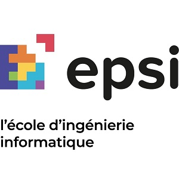

Qui suis-je ?
Je suis Paul Bammez, j'ai 19 ans et je suis actuellement en 2 ème année à l'EPSI.
J’ai choisi d’intégrer l’EPSI en septembre 2020
afin d’y préparer un Bachelor Devops sur trois années pour éventuellement continuer
sur un diplôme d’ingénierie informatique, en parallèle d’un BTS SIO option SLAM que je passerai
en fin d’année scolaire 2022.